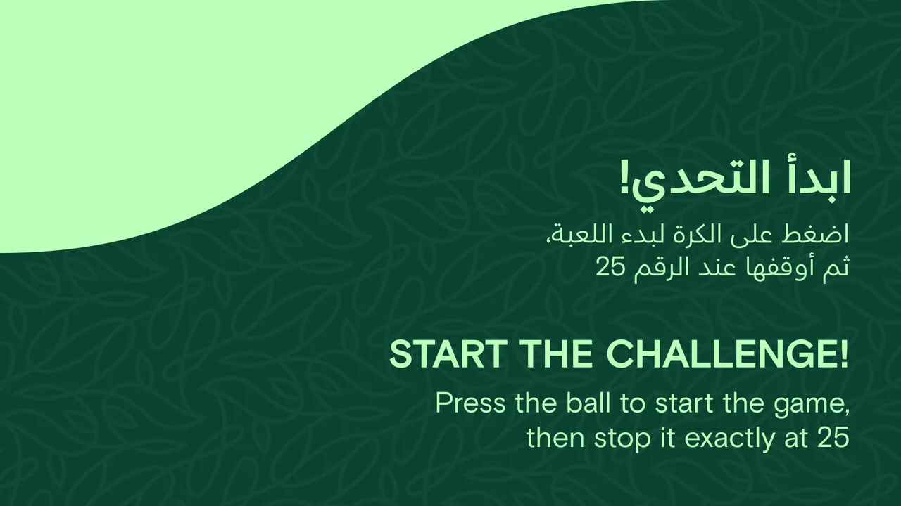
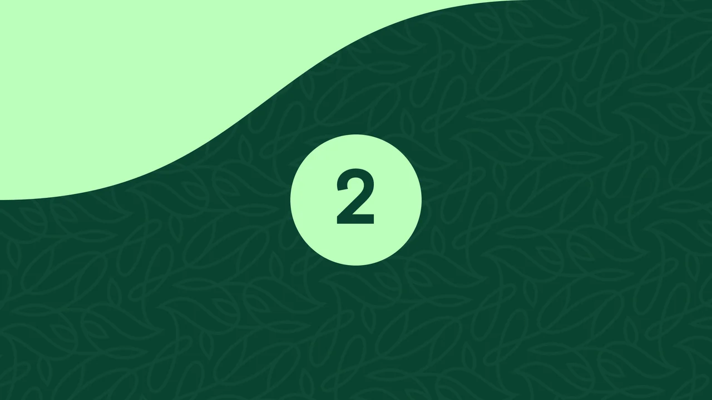
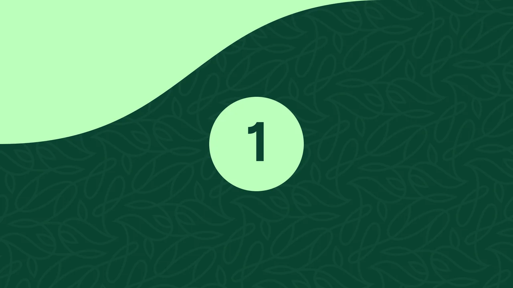
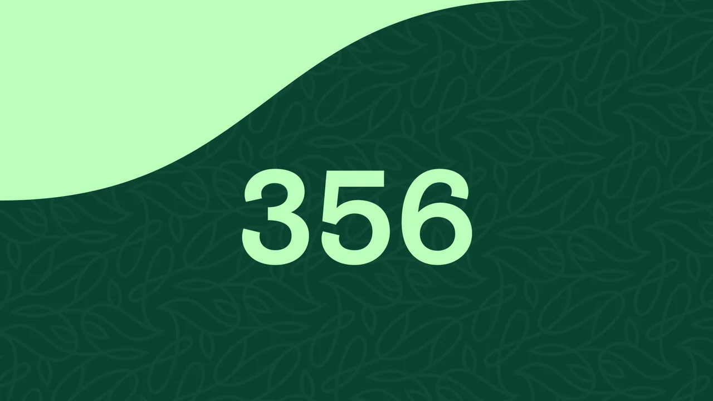
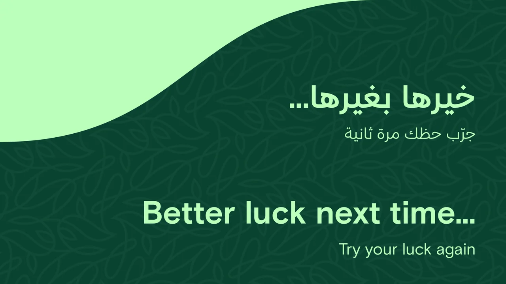
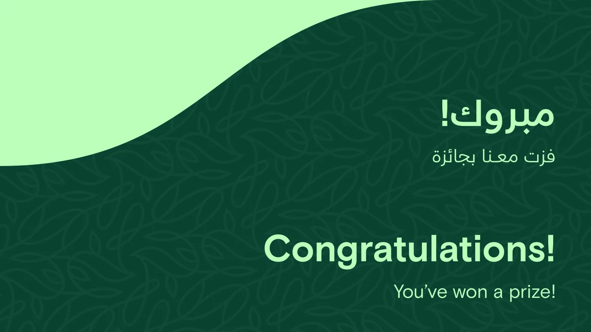

Learn the action
The screen sequence introduces the challenge through standby and tutorial stages.
A changing number becomes the moment of play.
Explore the story
Give a timing challenge a clear beginning, active state and result.
Standby and tutorial screens lead through countdown into a rolling score. The application then presents win or lose states, with monitor configuration supplied by the desktop shell.
The screen sequence introduces the challenge through standby and tutorial stages.
A countdown precedes the rolling number, making the active timing window distinct.
Separate win and lose states provide a clear endpoint for the round.
Explore the complete compositions and interface states. Select any image for a closer look.
09 / PROJECT IMAGES
Select a view to explore.
Bilingual instructions explain the physical input and timing goal.
A central count establishes the pace of the round.
The countdown keeps the same centered focal point.

The last count prepares the player for the changing number.

A simple launch cue makes the start of the challenge unmistakable.
The counter becomes the dominant visual element. The saved example reads 356.

A second saved counter example reads 390. These source variants use different values from the instruction target.
Arabic and English copy give the round a clear retry state.

The companion congratulatory artboard shows the positive ending. It is a design state, not a recorded reward.

Structure, interaction and visual decisions that give the work its character.
RoleGame state/score logic, visual interface and native display configuration; confirm individual contributions.
AssetsCredit WebView2, fonts and supplied/generated motion assets separately. The case does not claim original hardware or verified event results.
StatusPrivate source-grounded draft. Documented behavior and inspected code are distinguished from untested runtime and delivery.